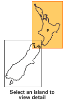
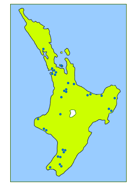

North Island schools in the Arts Online project are marked on this map. Move your mouse over the dots of the map image to view the names of the schools.
North Island schools in the Arts Online project are marked on this map. Move your mouse over the dots of the map image to view the names of the schools.
From this map, you will also be able to see the schools that are close to you. For school contact details click on the full list of schools link.
Full list of schools |
 |

North Island map | South Island map |